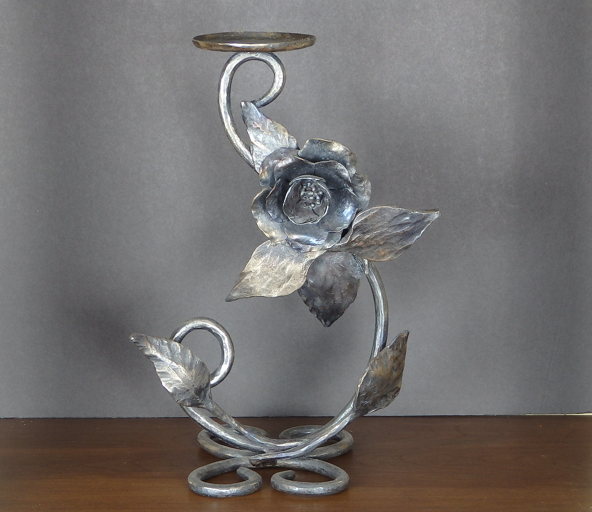

Metal casting requires careful planning and the deliberate execution of hundreds of precise steps.


My three-dimensional work is grounded in texture, resilience, and transformation. Elemental materials of steel, stone, and clay are used to transform raw nature and human craftsmanship into unique artistic expressions.
Hard, unyielding, and enduring, steel and stone have been my primary materials. Their contrasting textures and properties allow me to explore themes of strength, permanence, and natural forms. Much of my inspiration comes from the traditional work of European blacksmiths and stone masons. I am now exploring the intersection of these materials with modern themes of resilience and social awareness.
Specializing in functional and sculptural ceramics, my work honors traditional techniques. For example, my work with Tenmoku glazes—celebrated for their deep, dark, iron-rich finishes—is balanced by the unpredictable, organic surfaces of wood-fired kilns. Heavily influenced by Korean pottery traditions, my Moon jars are both physically challenging and aesthetically pleasing.
Metal casting requires careful planning and the deliberate execution of hundreds of precise steps.